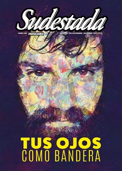

Buscar
Músicos populares en alerta
“Che, ¿cómo hacen para que no se escuche nada afuera? ¡Es tremendo lo que suenan!”, saluda Bruno Arias a los integrantes de Arbolito, apenas baja a su sala de ensayo y mítico búnker en Parque Patricios. Hace más de diez años que el grupo trabaja allí, macerando sus secretos eléctricos para vibrar juntos. En estos tiempos urgentes y conflictivos, Sudestada los reunió para compartir –desde sus voces– sus coordenadas creativas. Arbolito y Bruno Arias: dos exponentes del folclore de este siglo comprometido con las memorias, las voces y los territorios acallados. Desde hace años, la banda y el jujeño afianzan sus búsquedas transformadoras con fe latinoamericanista, se expanden a cada vez más públicos y abren resonancias para otros en su senda: las músicas populares argentinas en vuelo colectivo al futuro.
Edición N° 150
Noviembre-Diciembre 2017
Revista bimensual
Comprar edición impresaSumario
- Los ojos de Santiago Maldonado
- Fue el Estado
- Músicos populares en alerta
- La máquina maldita
- Neologistas sin diploma
- Los obreros que nos enseñaron a resistir
- El cadáver de Rodrigo
- "En la legalidad hay mejores condiciones que durante la guerra"
- Micaela García. Huellas y sonrisas desde el barrio
- “El rock era la puerta para acceder a pensamientos más allá de la música”
- El exorcismo de Julio César Guianze
Compartir Articulo
Arbolito desmorona fronteras entre generaciones. A la luz del rock de raíz folclórica avanzan sus canciones testimoniales –nada solemnes– sobre los conflictos sociales revelados por el oído colectivo. Rumbo al cambio real: desde abajo. "Nuestras obras y letras siempre cuentan las cosas que pasan en lo social y que nos pasan a nosotros", dice Ezequiel Jusid, el de las guitarras enchufadas, las acústicas y la voz. "Estos veinte años de país nos dieron muchísima letra y nos potenciaron la creatividad compositiva".
En todo este 2017, la banda (una de las pioneras en cruzar las coordenadas del folclore y el rock, para el siglo xxi) anduvo festejando sus veinte años de creaciones y agites sin concesiones sobre los desafíos transformadores para Latinoamérica. Así, entre julio y agosto repasaron sus ocho discos en dos fiestas en La Trastienda, y volverán a celebrar las dos décadas el sábado 4 de noviembre, a las 18, en Ciudad Cultural Kónex (Sarmiento 3131) del barrio del Abasto. Para los grandes y los chicos que los siguen a todos lados. "La gente tomó a Arbolito como espacio y bandera, sin prejuicios. Combinamos pogos, rock, chacareras, familia y niños sin problemas", describe Jusid.
Es cierto que "no es fácil mantener a un grupo durante veinte años. Nosotros resistimos en peñas y en escenarios de rock por igual", cuenta Pedro Borgobello, el descifrador de los sikus, la quena y el clarinete. Porque "si algo te emociona o no, ya no importa de qué género es. ¿Quién se va a fijar en eso?", capta el avezado bajista de cinco cuerdas Andrés Fariña. Y Diego Fariza, el de la batería, sigue cada palabra de sus compañeros en silencio. Sus convicciones están en todos los ritmos de Arbolito: de la raíz al cielo multicolor; del bombo legüero a los platillos y parches múltiples.
De las cumbias a las chacareras, de las zambas al reggae, del tinku boliviano a la saya, del candombe a todos los secretos del rock aún transgresor, "esta fiesta se multiplica con los años para todos", palpita Jusid, mientras esperan a Agustín Ronconi: el hacedor, con aquél, de la mayoría de las canciones, y a cargo del charango, el violín, la flauta traversa, las quenas y más guitarras. Pero los cinco están siempre presentes en las memorias de esta sala subterránea en Parque Patricios. El memorial de Arbolito los envuelve cuando los ojos se cruzan en tantos senderos, de asfalto y de tierra. ¿Cómo verlos sino en el camino por venir?
Aquí hay posters de shows, afiches de movidas de arte y militancia y una bandera whipala, con un arco iris cuadriculado. Sobre una repisa, un Premio Gardel junto a un ekeko con un pucho en la boca: es el muñeco de los pueblos aymaras que simboliza la abundancia y la prosperidad. Más allá, frente a un sillón que resiste el tiempo, hay estantes con las remeras oficiales de Arbolito en diversos colores, talles y precios. Y al centro, la vibración de los cinco: entre los instrumentos y los amplificadores están las hileras de cables que los conectan a tierra.
"En Suiza seríamos otro tipo de banda", larga Jusid, con risas de los demás. "Muy pocas veces hacemos canciones que no se arraiguen en lo que sucede. Lo político es central en Arbolito y eso genera otras sonoridades y experimentaciones. Es algo que va de la mano cuando se agita el avispero", dice Borgobello. "La semilla de la canción siempre genera nuevos mensajes. Primero es una canción pelada y eso, con más cosas para decir, despierta la creatividad musical de todos", amplía Ronconi, el de la barba y el pelo largo y los numerosos instrumentos. Su colega fundante de Arbolito, Ezequiel Jusid, sintetiza a modo de manifiesto: "Donde más se ve lo que somos es en las fechas que autoproducimos. La autogestión es clave para nosotros".
–¿Cómo los influyó el advenimiento del macrismo?
–"Ahora tenemos más temas para tocar de distintas épocas. Refrescamos el repertorio"–, sonríe Agustín Ronconi, que acaba de llegar de un concurso de una cátedra de flauta en la Escuela de Música Popular de Avellaneda, donde Arbolito se conoció y formó en otros tiempos arduos: los años noventa, pleno neoliberalismo. Jusid se abre sin nostalgia: "Al ser una banda de veinte años, atravesamos todas las etapas. Nada nos asusta. Crecimos tocando en la calle y no idealizamos a ningún gobierno. Es cierto que hasta que vino el gobierno de Macri hubo proyectos a nivel cultural que nos permitieron tocar en muchos rincones del país adonde es difícil llegar. Pudimos llegar a regiones impensadas para nosotros. Todo eso se cortó, y debimos reacomodarnos a hacer producciones nuestras"...
(La nota completa en la edición gráfica de Sudestada... ¿Por qué publicamos apenas un fragmento de cada artículo? Porque la subsistencia de Sudestada depende en un 100 por ciento de la venta y de la confianza con sus lectores, no recibimos subsidios ni pauta alguna, de modo que la venta directa garantiza que nuestra publicación siga en las calles. Gracias por comprender)
Comentarios
Patricio Féminis
Articulos más vistos


LIBRERÍA SUDESTADA

Colección infantil

Distribuidora de Libros

Suscripción

Sudestada en URUGUAY

Otros articulos de esta edición
Los ojos de Santiago Maldonado
Durante casi ochenta días, el rostro de Santiago Maldonado se incorporó a nuestra vida cotidiana y militante como parte de ...
Fue el Estado
En mitad de esta absurda tormenta de operaciones y manipulación mediática que no cesa, vale repetir certezas que ya son ...
 Género
Género
Micaela García. Huellas y sonrisas desde el barrio
En abril pasado nos arrebataban a Micaela para siempre. Otra vez, el estigma de un femicidio, el fantasma de la ...
 Adelanto del nuevo libro de Ricardo Ragendorfer
Adelanto del nuevo libro de Ricardo Ragendorfer
El cadáver de Rodrigo
¿Qué otro cronista puede ser capaz de infiltrarse en la necropsia de un ídolo popular, simular ser perito de parte, ...
“El rock era la puerta para acceder a pensamientos más allá de la música”
Conversar un rato con Rafa Hernández es meterse en un viaje rumbo a los años ochenta, a otra radio: esa ...
 El ojo blindado
El ojo blindado
Neologistas sin diploma
Los dialectos, la jerga, lo que algunos llaman el lunfardo, lo que en las barriadas populares se denominan berretines, son ...